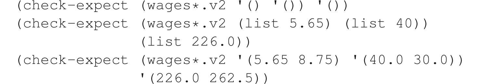
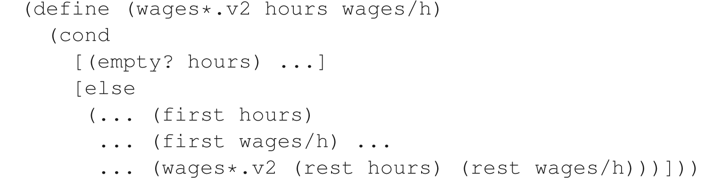
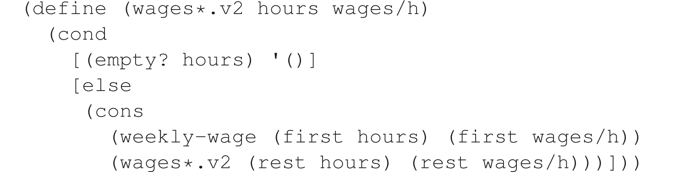

23.2 Processing Two Lists Simultaneously: Case 2
Chapter 10.1 presents the function wages*, which computes the weekly wages of some workers given their work hours. It consumes a list of numbers, which represents the hours worked per week, and produces a list of numbers, which are the corresponding weekly wages. While the problem assumes that all employees received the same pay rate, even a small company pays its workers differentiated wages.
Here we look at a slightly more realistic version. The function now consumes two lists: the list of hours worked and the list of corresponding hourly wages. We translate this revised problem into a revised header:
; [List-of Number] [List-of Number] -> [List-of Number]
; multiplies the corresponding items on
; hours and wages/h
; assume the two lists are of equal length
(define (wages*.v2 hours wages/h)
'())
Making up examples is straightforward:

As required, all three examples use lists of equal length.
The assumption concerning the inputs can also be exploited for the development of the template. More concretely, the condition says that (empty? hours) is true when (empty? wages/h) is true, and furthermore, (cons? hours) is true when (cons? wages/h) is true. It is thus acceptable to use a template for one of the two lists:

In the first cond clause, both hours and wages/h are '(). Hence no selector expressions are needed. In the second clause, both hours and wages/h are constructed lists, which means we need four selector expressions. Finally, because the last two are lists of equal length, they make up a natural candidate for the natural recursion of wages*.v2.
The only unusual aspect of this template is that the recursive application consists of two expressions, both selector expressions for the two arguments. But, this idea directly follows from the assumption.
From here, it is a short step to a complete function definition:

The first example implies that the answer for the first cond clause is '(). In the second one, we have three values available:
1. (first hours), which represents the first number of weekly hours;
2. (first wages/h), which is the first pay rate; and
3. (wages*.v2 (rest hours) (rest wages/h)), which, according to the purpose statement, computes the list of weekly wages for the remainders of the two lists.
Now we just need to combine these values to get the final answer. As suggested by the examples, we must compute the weekly wage for the first employee and construct a list from that wage and the rest of the wages:
(cons (weekly-wage (first hours) (first wages/h))
(wages*.v2 (rest hours) (rest wages/h)))
The auxiliary function weekly-wage uses the number of hours worked and the pay rate to compute the weekly wage for one worker:
; Number Number -> Number
; computes the weekly wage from pay-rate and hours
(define (weekly-wage pay-rate hours)
(* pay-rate hours))
Stop! Which function do you need to use if you wish to compute the wages for one worker? Which function do you need to change if you wish to deal with income taxes?
Exercise 388. In the real world, wages*.v2 consumes lists of employee structures and lists of work records. An employee structure contains an employee’s name, social security number, and pay rate. A work record also contains an employee’s name and the number of hours worked in a week. The result is a list of structures that contain the name of the employee and the weekly wage.
Modify the program in this section so that it works on these realistic versions of data. Provide the necessary structure type definitions and data definitions. Use the design recipe to guide the modification process. 
Exercise 389. Design the zip function, which consumes a list of names, represented as strings, and a list of phone numbers, also strings. It combines those equally long lists into a list of phone records:
(define-struct phone-record [name number])
; A PhoneRecord is a structure:
; (make-phone-record String String)
Assume that the corresponding list items belong to the same person.